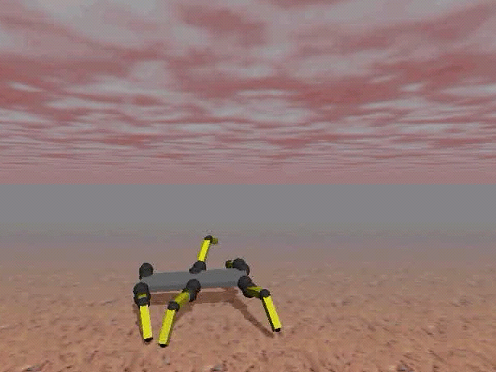

|
| |
| Home | |
| FAQ | |
| Player | |
| Utilities | |
| Stage | |
| Gazebo | |
| Contrib | |
| Documentation | |
| Publications | |
| Contributors | |
| Users |
| Project |
| Download |
| Bugs/Feedback |
| Mailing lists |
| Radish |
| Old news |
| Old stuff |
|
Gazebo 3D multiple robot simulator with dynamics |
{kind=link}
Gazebo is a multi-robot simulator for outdoor environments. Like Stage, it is capable of simulating a population of robots, sensors and objects, but does so in a three-dimensional world. It generates both realistic sensor feedback and physically plausible interactions between objects (it includes an accurate simulation of rigid-body physics).
Features:
- Simulation of standard robot sensors, including sonar, scanning laser range-finders, GPS and IMU, monocular and stereo cameras.
- Models for commonly used robot types such as the Pioneer2DX, Pioneer2AT and SegwayRMP.
- Realistic simulation of rigid-body physics: robots can push things around, pick things up, and generally interact with the world in a plausible manner.
- Player compatible: robots and sensors can be controlled through standard Player interfaces.
- Stand-alone operation: programs can interact directly with the simulator (i.e., without going through Player) using libgazebo (included in the distribution).
- New Stereo camera model: generates stereo image pairs, disparity and depth maps.
- New Completely re-written GUI using wxPython: most devices can now be directly controlled/inspected through the simulator GUI.
- New Plugin models: users can develop their own robot/sensor models, and have these models loaded dynamically at run time.
- New Skins: simple geometric models may be augmented with realisitc 'skins' from 3D modelling programs.
- Gazebo is free software, released under the GNU Public License. You are free to use, extend and modify Gazebo according to your needs, but we would appreciate it if you would send us your patch.
Gazebo can be downloaded from the SourceForge Download Page.
Stage and Gazebo
The Player/Stage project provides two multi-robot simulators: Stage and Gazebo. Since Stage and Gazebo are both Player-compatible, client programs written using one simulator can usually be run on the other with little or no modification. The key difference between these two simulators is that whereas Stage is designed to simulate a very large robot population with low fidelity, Gazebo is designed to simulated a small population with high fidelity. Thus, the two simulator are complimentary, and users may switch back and forth between them according to their needs.
Screen Shots
|
Pioneer2AT with a SICKLMS200 and SonyVID30, showing both laser rays and camera frustrum. |
|||
{kind=link}
{kind=link}
{kind=link}
{kind=link}
|
The wxPython GUI, showing a number of control panels. |
{kind=link}
|
Models with and without skins. |
|
{kind=link}
{kind=link}
Sample Videos
 |
Collision testing with one robot. |
|
Deployment with 100 robots (using a plugin model). |
|
|
Collision testing with two robots. |
|
|
Interacting with the environment. |
|
|  |
NASA JPL spiderbot by Dylan Shell and Gabe Sibley. Check out the project page. gazebo-walker.avi 18Mb |
|
Early Segway RMP model, with non-inverted pendulum dynamics. |
|
|
Early Segway RMP model, with divergent dynamics (blooper reel). |
{kind=link}
{kind=link}
{kind=link}
{kind=link}
{kind=link}